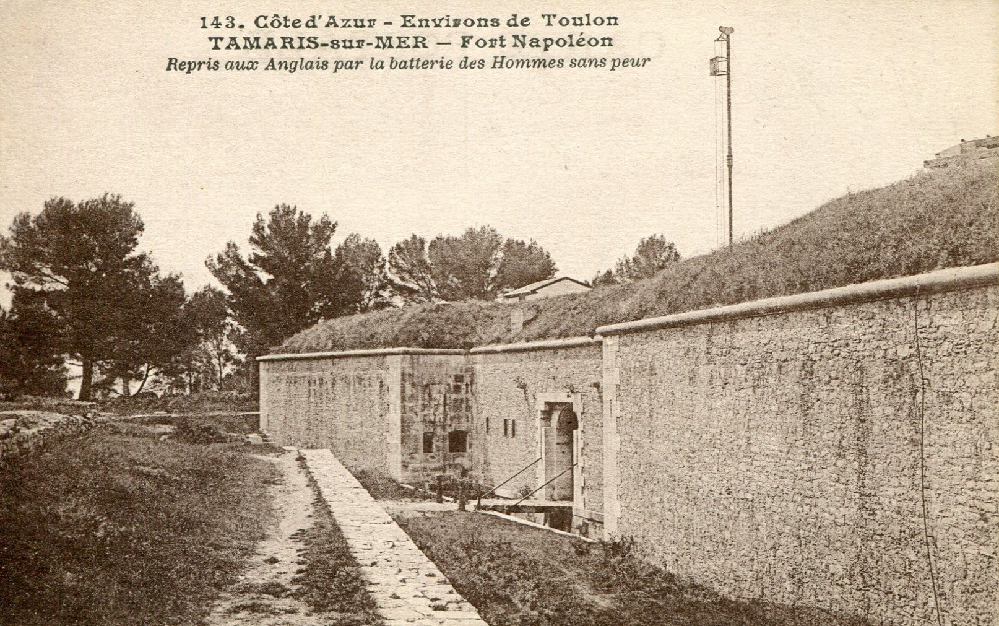
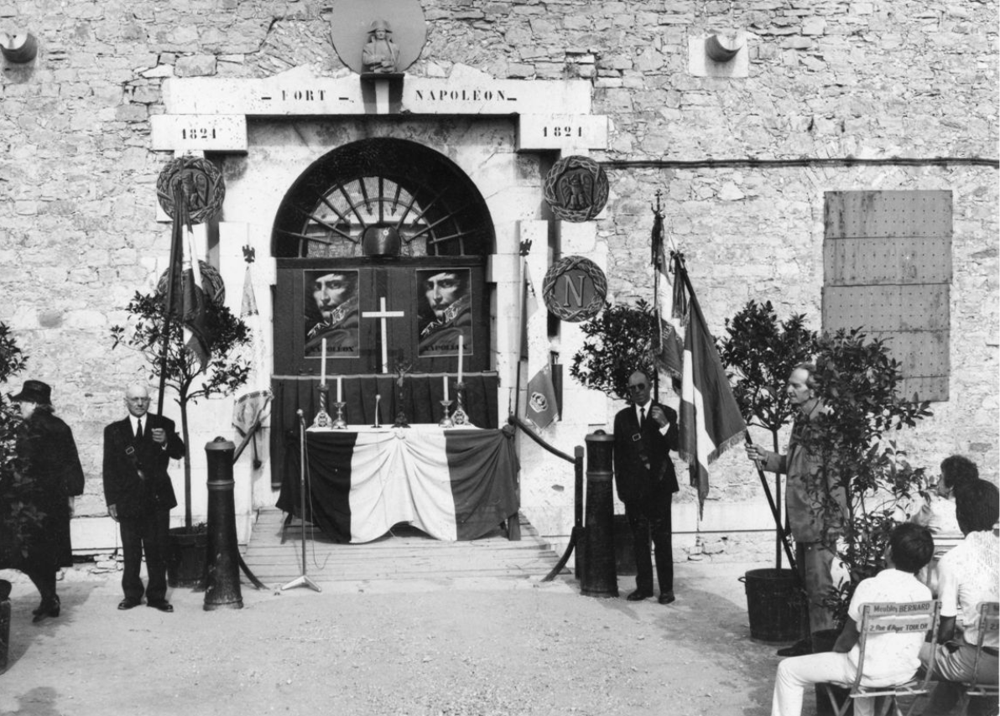
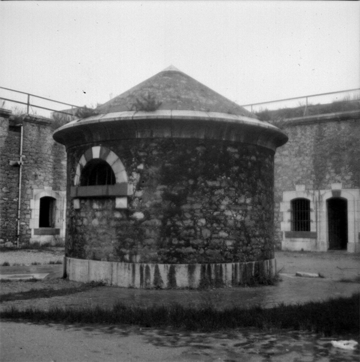
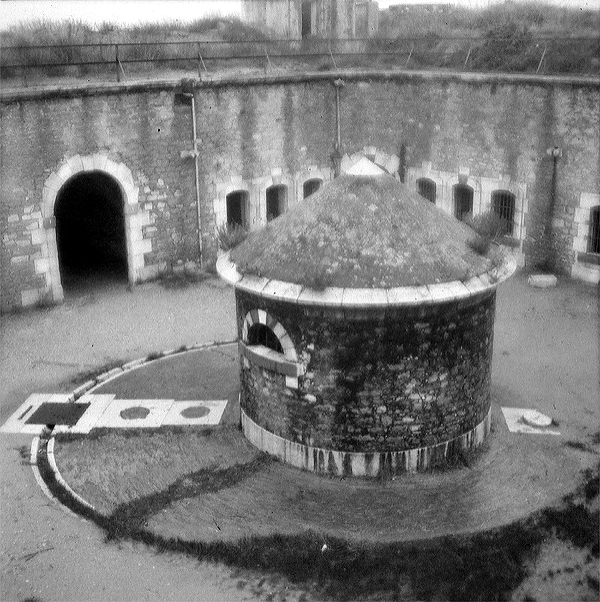
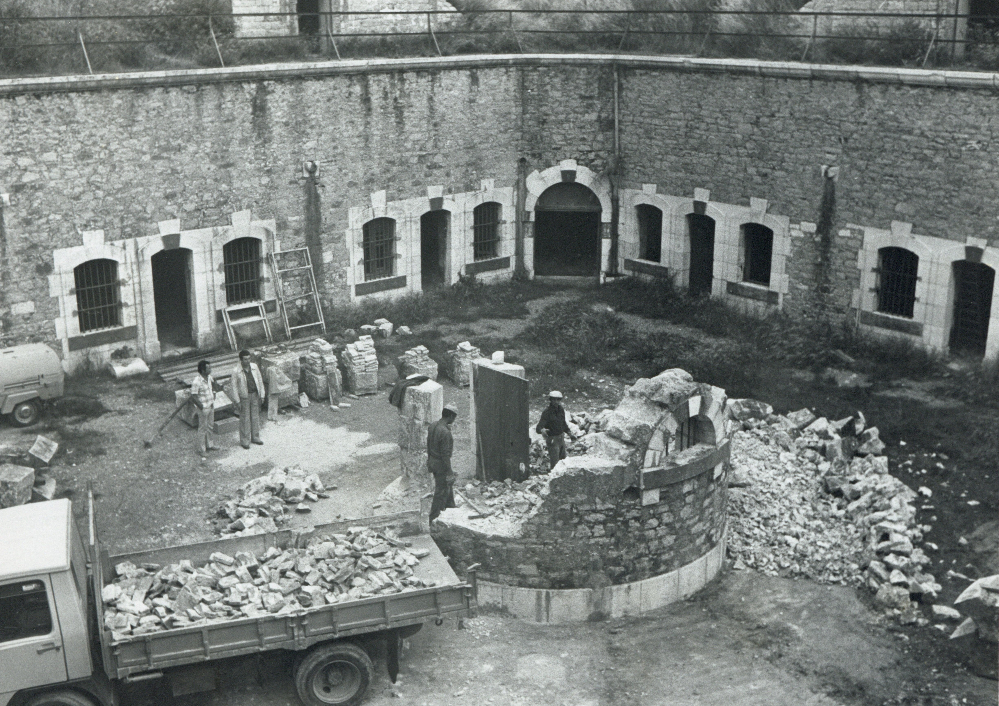

À travers le temps
Fin de parcours
7/7
Après avoir rempli sa mission militaire, le Fort Napoléon a connu plusieurs vies. Il sert un temps de poste de guet, avant d'être utilisé comme refuge par la population locale. Pendant la Seconde Guerre mondiale, il est occupé par les troupes allemandes et transformé en casernement fortifié. Délaissé après le conflit, il tombe en sommeil avant d'être réhabilité dans les années 1990. Aujourd'hui, il est devenu un lieu culturel et patrimonial, ouvert à tous les curieux d'histoire et de paysage.

Fort Napoléon – Tamaris sur mer – 1793

Cérémonie en hommage à Napoléon Bonaparte


Fort à l'abandon – Années 70/80 – Avant réhabilitation

Travaux de rénovation et réhabilitation du fort par la ville de La Seyne-sur-Mer – Années 80/90